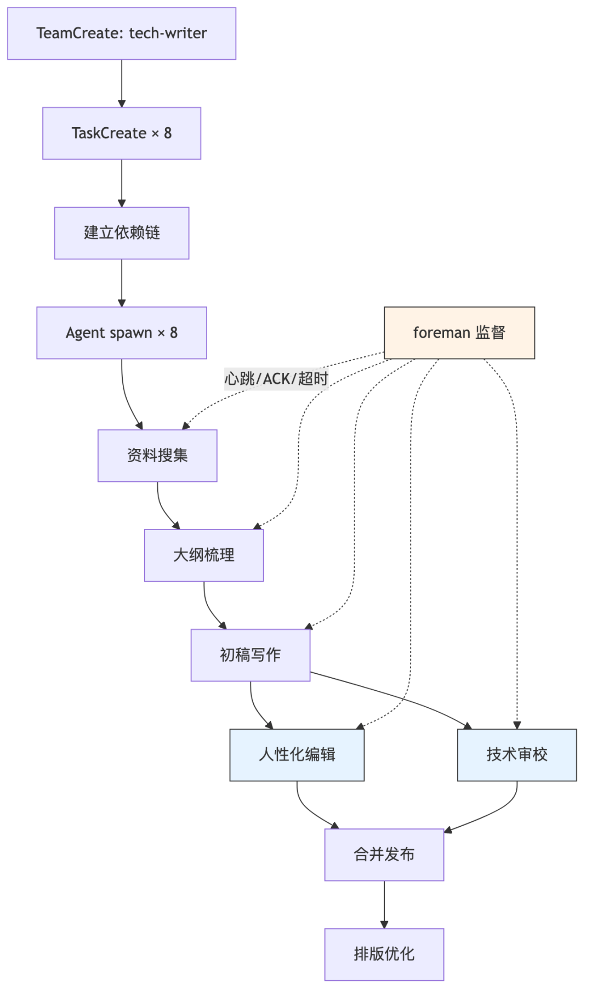
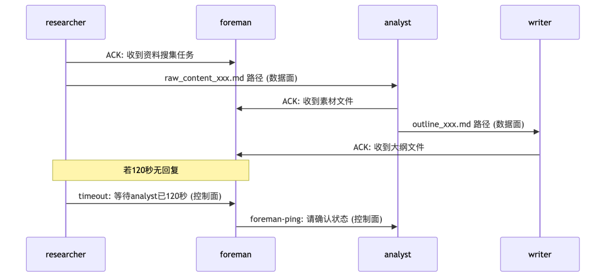
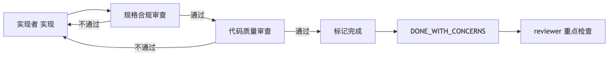

🎯 适合谁：用过Claude Code单agent、想组多agent团队的开发者 | ⏱️ 8分钟读完 | 📝 约2000字
你用Claude Code写代码，爽。但当你需要3个agent并行——一个查资料、一个写代码、一个审校——事情就崩了：agent之间不通信、互相等死、偷懒糊弄。
本文不介绍什么是Agent Team。只讲怎么搭、怎么写提示词、怎么解决通讯和偷懒。读完就能动手。
1. 组建团队：从TeamCreate到流水线跑通
组建Agent Team就三步：建团队 → 建任务+依赖 → spawn成员。Claude Code提供了完整的团队API：TeamCreate、TaskCreate、TaskUpdate、SendMessage。
1.1 任务依赖链设计
关键在blockedBy——它保证下游任务不会在上游没完成时启动。看这个技术写作团队的例子：
TaskCreate: subject="资料搜集", description="搜集技术写作相关素材和参考资料"
→ 系统返回 id=1
TaskCreate: subject="大纲梳理", description="基于素材梳理文章大纲", addBlockedBy: [1]
→ 系统返回 id=2
TaskCreate: subject="初稿写作", description="按大纲撰写文章初稿", addBlockedBy: [2]
→ 系统返回 id=3
TaskCreate: subject="人性化编辑", description="优化语言表达，去AI味", addBlockedBy: [3]
→ 系统返回 id=4
TaskCreate: subject="技术审校", description="验证技术正确性和代码示例", addBlockedBy: [3]
→ 系统返回 id=5
TaskCreate: subject="合并发布", description="合并编辑稿和审校报告", addBlockedBy: [4, 5]
→ 系统返回 id=6
TaskCreate: subject="排版优化", description="最终排版和格式检查", addBlockedBy: [6]
→ 系统返回 id=7
TaskCreate: subject="监督监控", description="全流程心跳监控和异常报告", 无依赖
→ 系统返回 id=8
注意任务4和5：人性化编辑和技术审校都依赖初稿，但互不依赖——它们并行执行，这是流水线提速的关键。
1.2 SESSION_ID防跨会话冲突
每次团队运行生成唯一SESSION_ID（如20260612-211106），所有中间文件带此后缀：raw_content_20260612-211106.md、outline_and_synthesis_20260612-211106.md。绝不用无后缀的固定文件名，防止多次运行互相覆盖。
💡 什么时候用 SESSION_ID：团队可能被多次运行（调试/重跑/并行多主题），只要中间文件可能冲突就必须用。单次运行且无历史文件 → 可省略。
1.3 主编模式
主编（team-lead）只控制流程，不做实质工作。成员间直接SendMessage传递产出物，主编不转发——避免主编成为瓶颈。

blockedBy不是"谁先执行"，而是"谁完成后我才能开始"。想清楚这个方向，依赖链就不会写反。
什么时候用：
3+步骤且有依赖关系的任务 → 用TeamCreate + TaskCreate依赖链，让系统自动调度 简单2步串行（如"先查后改"）→ 直接Agent调用，不用建团队 有明确并行机会的任务 → 必须用依赖链，把并行阶段设为互不阻塞（如编辑∥审校）
2. 写提示词：Agent角色定义的四要素模板
Agent提示词决定团队成败。一个烂提示词的agent，比没有agent更糟——它会产出看似合理实则错误的结果，浪费审查时间。
2.1 提示词结构
每个Agent提示词遵循统一结构：
角色定位 → 承担任务 → 工作流程 → 通讯规则 → 关键原则
看监督员（foreman）的提示词核心片段：
# foreman 角色定义
name:foreman
model:sonnet# 监督需要判断力，不能用haiku
tools:
-Read # 只读
-Grep # 只查
-Glob # 只找
-Bash # 执行检查命令
-SendMessage# 通讯
-TaskList # 读任务状态
-TaskUpdate# 更新任务状态
-TaskGet # 读任务详情
# 注意：无 Write/Edit/WebSearch
# foreman 只监督不执行——不写文件，不搜索
再看研究员（researcher）：
# researcher 角色定义
name:researcher
model:haiku# 查找任务用最轻量模型
tools:
-Read
-Grep
-Glob
-Bash
-WebSearch # 需要搜索
-WebFetch # 需要抓取网页
-SendMessage
-TaskList
-TaskUpdate
-TaskGet
# 注意：无 Write/Edit
# researcher 只搜集素材不写文章
💡 YAML frontmatter 只是角色元数据（名称、模型、工具），下方的 Markdown 正文才是提示词主体。完整的 agent 定义 = YAML frontmatter（~8行）+ Markdown body（100+行），后者包含角色定位→承担任务→工作流程→通讯规则→关键原则。只看 YAML 配不好 agent。
2.2 四要素：FSSC模板
每个Agent的提示词必须满足四要素：
| F | |||
| S | |||
| S | |||
| C |
⚠️ 永远不要给agent"全权限"——越权是偷懒的温床。researcher有WebSearch但无Write，foreman既无Write也无WebSearch。权限越精确，agent越专注。
什么时候用：
角色职责单一（如researcher只查资料）→ 精简提示词 + 少工具 + haiku模型 角色需判断力（如foreman要诊断卡住原因）→ sonnet模型 + 多工具 + 明确约束 角色做审查（如reviewer审校代码）→ opus模型 + 完整上下文 + 严格约束
3. 解决通讯问题：ACK + 超时 + 降级 + 去重
多agent团队最常崩的地方不是逻辑，是通讯：消息丢了不知道、等回复等到死、重复消息刷屏。四层协议逐层解决。
3.1 ACK确认——防消息丢失
每个agent收到任务消息后，第一步就回ACK：
收到主编任务消息后：
SendMessage(to="foreman", message="ACK: researcher收到资料搜集任务")
foreman据此判断通讯成功。若ACK未在30秒内到达，视为通讯失败，触发重试。无ACK = 无行动——最基础的可靠性保障。
3.2 超时主动提醒——防无限等待
agent等待上游回复超过120秒，主动上报：
等待analyst回复超时：
SendMessage(to="foreman", message="timeout: researcher等待analyst已120秒")
让监督层感知等待状态，避免agent静默卡住。
3.3 通讯失败降级——防断连
SendMessage失败时的降级策略：
1. 等待10秒
2. 重试1次
3. 仍失败 → SendMessage(to="foreman", message="通讯失败: analyst不可达")
4. foreman接管重试和升级
3.4 去重防护——防刷屏
发送前检查：30秒内是否已发过相同to + subject的消息。若是，跳过。
3.5 数据面/控制面分离
大规模agent团队的架构关键：
数据面：产出物直接传递。researcher→analyst→writer→editor/reviewer→publisher，agent间直接SendMessage传文件路径 控制面：健康监控走foreman。foreman↔所有成员（心跳/ACK/去重），foreman→主编（异常报告） 
💡 并行阶段的agent之间严格禁止通信。编辑和审校同时进行时互相不能发消息——防止互相影响导致偏见。
什么时候用：
2+agent需要协作 → 必须有ACK + 超时机制，否则消息丢了都不知道 agent数 > 5 → 必须数据面/控制面分离 + foreman监督，否则主编成为瓶颈 单agent或简单串行 → 不需要复杂通讯协议，直接调用即可
4. 解决偷懒问题：五层防线
Agent偷懒不是bug，是feature——它会选最省力的路径完成任务。你说"修复测试"，它就把timeout改大10倍；你说"优化代码"，它就加一行注释。五层防线逐层堵死。
4.1 第一层：精确定义范围
❌ 坏的prompt：修复所有测试
✅ 好的prompt：修复 agent-tool-abort.test.ts 中的 3 个失败用例：
1. "should abort tool with partial output capture"
2. "should handle mixed completed and aborted tools"
3. "should properly track pendingToolCount"
范围太大→agent迷失；范围精准→agent专注。
4.2 第二层：约束不可做
❌ 无约束：修复上述测试
✅ 有约束：不要只加大超时——找到真正问题
不设约束，agent会选最省力的路径。
4.3 第三层：要求特定输出格式
强制agent声明完成信心：
agent完成后必须上报状态：
DONE # 完全完成
DONE_WITH_CONCERNS # 完成了但有疑虑
NEEDS_CONTEXT # 缺上下文，无法继续
BLOCKED # 被阻塞，需要人工介入
DONE_WITH_CONCERNS的设计很精妙：agent完成了但自己也有疑虑，下游reviewer要重点检查。
4.4 第四层：独立审查
每个任务完成必须经过两道独立审查：

规格合规审查：代码是否符合规格？有没有遗漏或多做？
代码质量审查：实现质量如何？有没有隐藏问题？
红线：实现者的self-review ≠ 真正的review。"close enough"不接受——spec reviewer发现issue = 不通过 = 实现者修复 = 再审，循环到通过。
4.5 第五层：模型路由策略
不浪费资源的同时保证关键环节的质量。
什么时候用：
agent产出直接面向用户（如文章、代码提交）→ 五层全上，不能省 内部探索性任务（如调研、原型验证）→ 范围+约束即可，审查可简化 永远不要跳过独立审查——self-review不是review，agent自己说"我检查过了"不算数
5. 常见问题与避坑
⚠️ 最常见的错误：给agent全权限+模糊指令+无审查。这三条同时出现时，agent必然偷懒——它有权限乱来、不知道该做什么、也没人检查。三件事至少堵一件。
6. 总结
组建团队靠依赖链（TeamCreate → TaskCreate + blockedBy → Agent spawn），写提示词靠四要素（Focused + Self-contained + Specific output + Constraints），通讯靠ACK + 超时 + 降级 + 去重，防偷懒靠五层防线（范围 → 约束 → 输出 → 审查 → 模型路由）。四件事做好，Agent Team就能真正跑起来。
下一步：从你的下一个3+步骤任务开始，先用TaskCreate画依赖链，再用FSSC模板写提示词，最后加ACK协议——不要一上来就全套，先跑通再迭代。
参考链接
Claude Code Agent Teams — 官方Agent Team文档 oh-my-claudecode — 生产级多agent编排框架，本文所有实战模式来源 Subagent-Driven Development — 两阶段审查与防偷懒机制